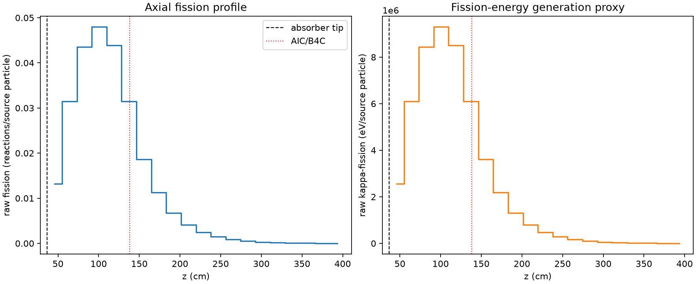
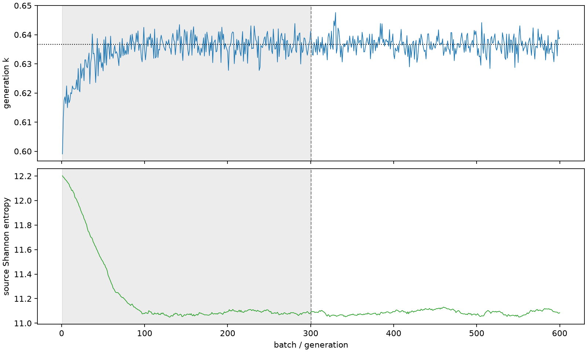

| field | value |
|---|---|
| experiment | V2-ADVISOR_PILOT8-0003 |
| k | 0.6366552336339232 |
| MC standard error | 0.00014036745790779444 |
| seconds | 1129.3944937920023 |
| acceptance | not_assessed |
| convergence | review_required |
Completed is output integrity only; physical and statistical review required. Zero tallies do not prove zero production or zero uncertainty.
| diagnostic | value |
|---|---|
| geometric fuel voxels | 5280 |
| zero fission tally voxels | 0 |
| low signal fuel voxels | 557 |
| low signal fission share | 0.00016959200784578458 |
| low signal kappa share | 0.00016960933939876987 |
| important fission share | 0.9500655229002843 |
| previous filter included | 4723 |
| duration estimate s | 1562.5173488400023 |
| actual minus estimate s | -433.122855048 |
| fission relative MC error | statistics |
|---|---|
| all_geometric_fuel | {"voxels": 5280, "positive_mean_voxels": 5280, "zero_mean_voxels": 0, "undefined_relative_error_voxels": 0, "median": 0.024251994391700865, "p95": 0.3015218294921714, "maximum": 0.6418675649172456} |
| low_signal | {"voxels": 557, "positive_mean_voxels": 557, "zero_mean_voxels": 0, "undefined_relative_error_voxels": 0, "median": 0.29549492826410073, "p95": 0.47131987603538994, "maximum": 0.6418675649172456} |
| important_95pct | {"voxels": 2246, "positive_mean_voxels": 2246, "zero_mean_voxels": 0, "undefined_relative_error_voxels": 0, "median": 0.007818295004459505, "p95": 0.015436554494676047, "maximum": 0.018273421528988656} |
| outside_previous_filter | {"voxels": 557, "positive_mean_voxels": 557, "zero_mean_voxels": 0, "undefined_relative_error_voxels": 0, "median": 0.29549492826410073, "p95": 0.47131987603538994, "maximum": 0.6418675649172456} |
| kappa_fission relative MC error | statistics |
|---|---|
| all_geometric_fuel | {"voxels": 5280, "positive_mean_voxels": 5280, "zero_mean_voxels": 0, "undefined_relative_error_voxels": 0, "median": 0.024210050296261956, "p95": 0.3006381765269054, "maximum": 0.641040530421375} |
| low_signal | {"voxels": 557, "positive_mean_voxels": 557, "zero_mean_voxels": 0, "undefined_relative_error_voxels": 0, "median": 0.2950117243947422, "p95": 0.47051350375938955, "maximum": 0.641040530421375} |
| important_95pct | {"voxels": 2246, "positive_mean_voxels": 2246, "zero_mean_voxels": 0, "undefined_relative_error_voxels": 0, "median": 0.007801626066476511, "p95": 0.015404342503802518, "maximum": 0.018241331603461537} |
| outside_previous_filter | {"voxels": 557, "positive_mean_voxels": 557, "zero_mean_voxels": 0, "undefined_relative_error_voxels": 0, "median": 0.2950117243947422, "p95": 0.47051350375938955, "maximum": 0.641040530421375} |
| axial bin | fission share | kappa-fission share |
|---|---|---|
| 1 | 0.05102263168002234 | 0.051024826970157186 |
| 2 | 0.12184229872108873 | 0.12183783038448451 |
| 3 | 0.16876114438332004 | 0.16875561307880638 |
| 4 | 0.18575078222788244 | 0.18574429713703286 |
| 5 | 0.16986087858039128 | 0.16985474676015544 |
| 6 | 0.12188071982934437 | 0.12188242608917928 |
| 7 | 0.07219453460007584 | 0.07220171097316203 |
| 8 | 0.043699094640880884 | 0.0437036416837051 |
| 9 | 0.026173991144531904 | 0.02617673824678706 |
| 10 | 0.015907667346385438 | 0.015909374409662298 |
| 11 | 0.009554056297159368 | 0.009555182597034962 |
| 12 | 0.005683918680256405 | 0.0056845192351893566 |
| 13 | 0.0033146765852229555 | 0.00331502532923738 |
| 14 | 0.0019036801959440319 | 0.0019038387139923144 |
| 15 | 0.0010787455265668959 | 0.0010788870937073125 |
| 16 | 0.0006420654208664551 | 0.0006421325858886877 |
| 17 | 0.0003797777071447049 | 0.00037982308549498164 |
| 18 | 0.0002060596837881847 | 0.00020609607694018126 |
| 19 | 0.00010387174985529905 | 0.00010388873973391374 |
| 20 | 3.94049992722416e-05 | 3.940080964859549e-05 |
Histories include the inactive-to-active transition at batch 300. kappa-fission approximates fission energy production, not total heat deposition.

